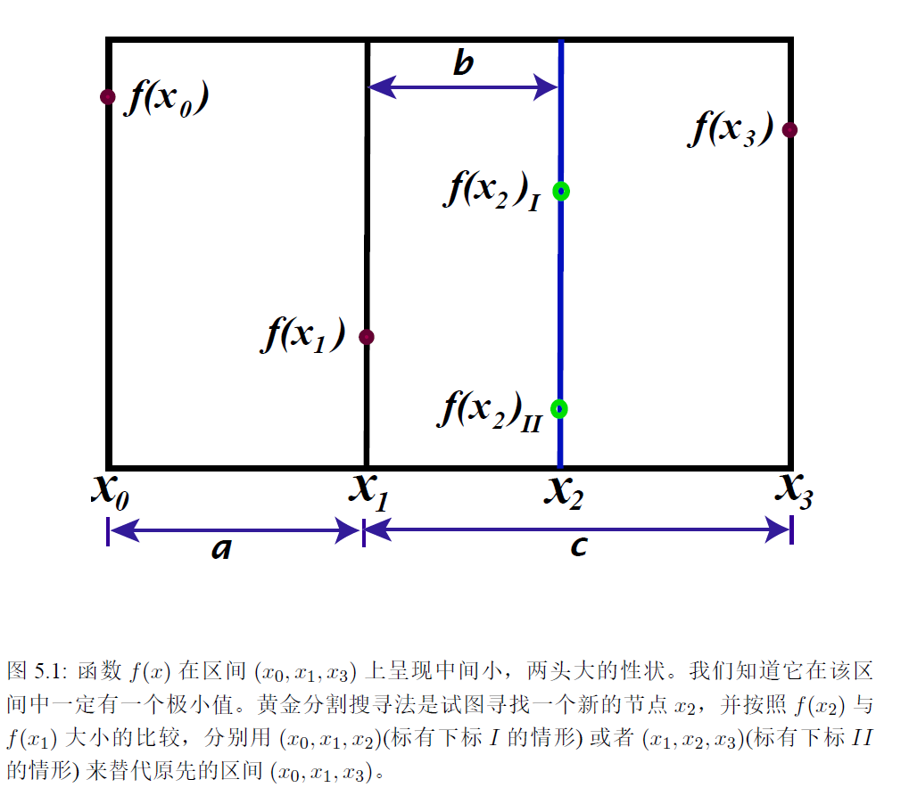
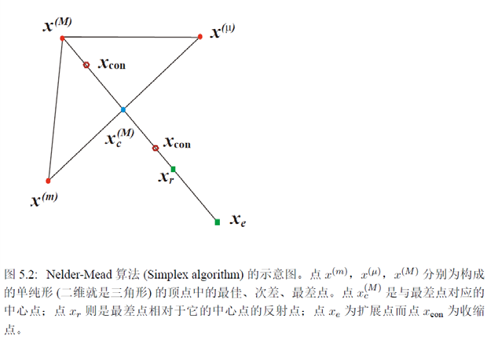

数值解和优化问题(03)：无导数的优化方法
所谓优化问题, 就是求一个函数的极小值点. 极值与导数有着千丝万缕的联系, 但有时我们并不需要求导就能设法求解优化问题, 本节给出单元和多元函数优化方法各一例: 黄金分割搜寻法和单纯形方法.
|  |  |
| (摘自刘川《计算物理导论》图 5.1) | (摘自刘川《计算物理导论》图 5.2) |
黄金分割搜寻法
假设我们从预估的区域内选择三个点:\(x_0<x_1<x_3\). 它们的函数值可以计算. 假如这三个函数值中最小者为\(f(x_1)\), 只要函数和区域不太奇特, 那么在\((x_0, x_3)\)上必然存在极小值点.
然后我们产生一个点\(x_2\in(x_1,x_3)\), 那么分两种情况:
- \(f(x_1)<f(x_2)\), 则\(f(x_1)\)仍维持最小, 新区间取作\((x_0,x_2)\), \(x_1\)留作比较;
- \(f(x_1)>f(x_2)\), 则\(f(x_2)\)成为新的最小, 新区间取作\((x_1,x_3)\), \(x_2\)留作比较.
那么如何得到\(x_2\)呢? 设定三个长度: \[ a:=x_1 - x_0\ ,\qquad b := x_2 - x_1\ ,\qquad c := x_3-x_1 \] 两种情况下的新区间总长度分别是\(a+b\)和\(c\), 我们希望两者一致. 另外, 我们还希望两种新区间有相似性, 即各个点比例一致. 那么 \[ \begin{aligned} b &= c - a \\ \frac{b}{c} &= \frac{a}{a + c} \end{aligned} \] 解得 \[ c = \frac{\sqrt{5}+1}{2}a\ ,\qquad b = \frac{\sqrt{5}-1}{2}a \] 这恰好是黄金分割比, 因此这种方法称作 黄金分割搜寻法.
方法总结
给定区间两端点\(x_0<x_3\), 由此求出两值为 \[ x_1 = \frac{\sqrt{5}-1}{2}x_0 + \frac{3-\sqrt{5}}{2}x_3 \\ x_2 = \frac{3-\sqrt{5}}{2}x_0 + \frac{\sqrt{5}-1}{2}x_3 \]
研究结束条件\(g(x_0,x_1,x_2,x_3)\le\epsilon\)是否满足, 满足则终止, 不满足则来到步骤3.
比较\(f(x_1)\)和\(f(x_2)\), 如果前者更小, 来到步骤4.a; 如果前者更大, 来到步骤4.b.
根据上一步的情况选择其一:
- 将\(x_0,x_1,x_2\)作为新的\(x_0,x_2,x_3\), 新的\(x_1\)按照步骤1计算, 进入步骤2.
- 将\(x_1,x_2,x_3\)作为新的\(x_0, x_1,x_3\), 新的\(x_2\)按照步骤1计算, 进入步骤2.
单纯形方法
前置知识
单纯形方法是适用于多元函数的无导数优化方法, 也叫 Nelder-Mead 方法. 要使用这种方法, 就要先定义所谓的 单纯形:
考虑\(n\)维空间中完全联通的\(n+1\)个不共超平面的点, 任选\(n\)个点即共超平面. 按照\(C_{n+1}^n\)组合出的\(n+1\)个超平面围成的几何体, 称作\(n\)维空间的单纯形.
举例说明即是: \(1\)维的线段, \(2\)维的三角形, \(3\)维的四面体......
构造单纯形的方法非常简单, 给定一个出发点\(\vec{x}^{(0)}\), 构造另外\(n\)个点[1] \[ \vec{x}^{(i)}=\vec{x}^{(0)}+h_i\hat{e}_i\ ,\qquad i = 1, 2, \cdots, n \] \(n+1\)个点中, 有三个点尤其应该关注:
- 最佳点: 函数值最小的点, 记作\(\vec{x}^{(m)}\).
- 最差点: 函数值最大的点, 记作\(\vec{x}^{(M)}\).
- 次差点: 函数值次大的点, 记作\(\vec{x}^{(\mu)}\).
对于每个点定义它的对偶中心点: \[ \vec{x}_c^{(k)}=\frac{1}{n}\sum_{j=0,j\ne k}^n\vec{x}^{(j)} \]
算法步骤
对给定的起始点确定其它\(n\)个点和\(\vec{x}^{(M)},\vec{x}^{(m)},\vec{x}^{(\mu)}\).
反射步骤
求出\(n+1\)个点的样本方差\(s^2\)并与规定的误差\(\epsilon\)比较, 如果更低就停止迭代, 否则进行反射, 具体地: \[ \vec{x}_r=(\alpha+1)\vec{x}_c^{(M)}-\alpha\vec{x}^{(M)} \] 其中\(\alpha>0\)是可调的反射系数.
判断函数值, 如果满足\(f(\vec{x}^{(m)})<f(\vec{x}_r)<f(\vec{x}^{(\mu)})\), 则用\(\vec{x}_r\)替代\(\vec{x}^{(M)}\)(尽管还有比它更差的点)并回到步骤2.a; 如果\(f(\vec{x}_r)<f(\vec{x}^{(m)})\), 即它成了最佳的点, 进入步骤3; 如果\(f(\vec{x}_r)>f(\vec{x}^{(\mu)})\), 进入步骤4.
扩展步骤
定义新的扩展点\(\vec{x}_e\), 使得 \[ \vec{x}_e=\beta\vec{x}_r+(1-\beta)\vec{x}_c^{(M)} \] 其中\(\beta>1\)是一个可调的扩展参数.
判断函数值, 如果\(f(\vec{x}_e)<f(\vec{x}^{(m)})\), 则用\(\vec{x}_e\)替代\(\vec{x}^{(M)}\); 否则用\(\vec{x}_r\)替代\(\vec{x}^{(M)}\). 不管用谁替代都回到步骤2.
收缩步骤
判断函数值. 如果\(f(\vec{x}_r)<f(\vec{x}_c^{(M)})\), 则极小值点位于\(\vec{x}_r\)和\(\vec{x}_c^{(M)}\)之间, 收缩点选为 \[ \vec{x}_{con}=\gamma\vec{x}_r+(1-\gamma)\vec{x}_c^{(M)}\ ,\qquad\gamma\in(0,1) \] 如果\(f(\vec{x}_r)\ge f(\vec{x}_c^{(M)})\), 则极小值点位于\(\vec{x}^{(M)}\)和\(\vec{x}_c^{(M)}\)之间, 收缩点选为 \[ \vec{x}_{con}=\gamma\vec{x}^{(M)}+(1-\gamma)\vec{x}_c^{(M)} \]
判断函数值, 如果\(f(\vec{x}_{con})<f(\vec{x}^{(M)})\)且\(f(\vec{x}_{con})<f(\vec{x}_r)\), 用\(\vec{x}_{con}\)替代\(\vec{x}^{(M)}\)回到步骤2; 否则, 回到步骤1将每个\(h_k\)都减半, 重新构造各个点.
- 这里的构造只需要线性无关, 不需要正交性, 斜交是完全允许的. ↩︎